Peek into My Academic World
Meow
Step 1:
Download the openvpn file and connect to the vpn. Spawn the machine to get the IP address to attack.
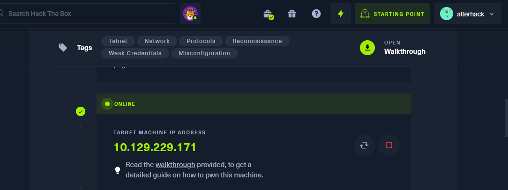 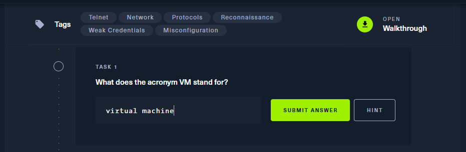 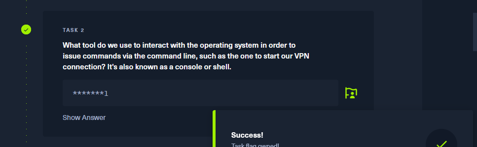 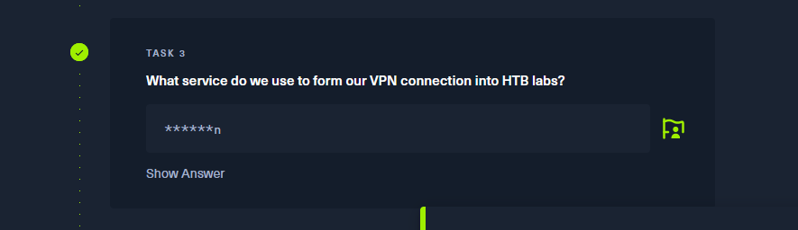 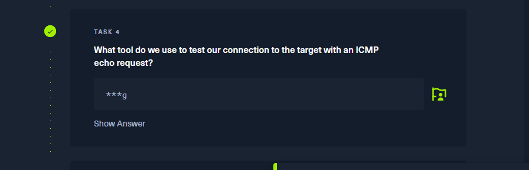
Some questions are pretty straightforward. Like for example, this one
The answers were not visible anymore by the time I took the screenshots but here are the answers for these questions.
- Terminal
- Openvpn
- ping
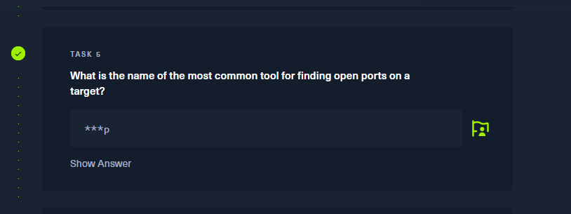
-nmap
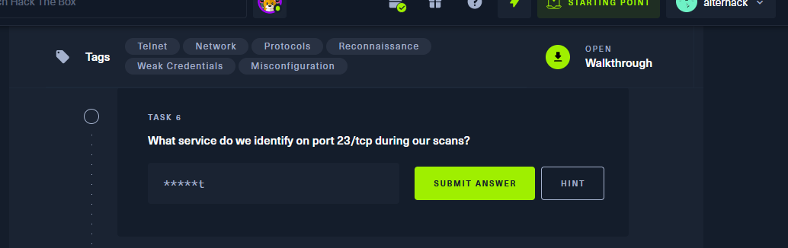
For this one though, we need to do a nmap scan of the target IP, to figure out the open ports and services running on the target machine with the given ip address.
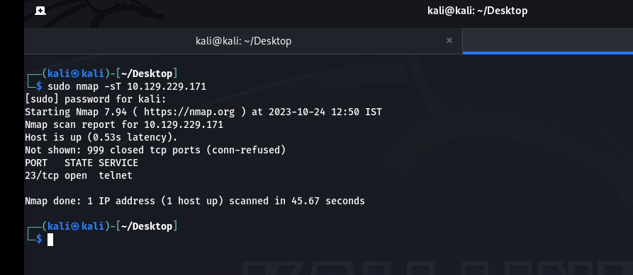
As you can see, the nmap with -sT switch gave us some data. -sT switch performs some basic TCP scans on the target IP address. From the output, we can see that the target machine has its port 23 open and is running a telnet service.
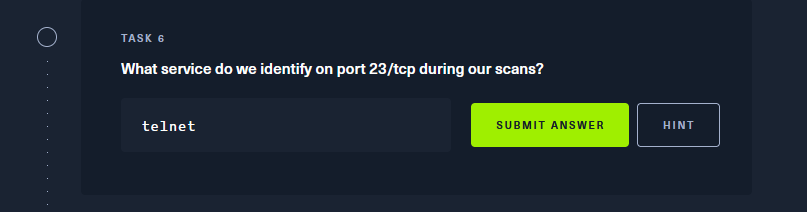
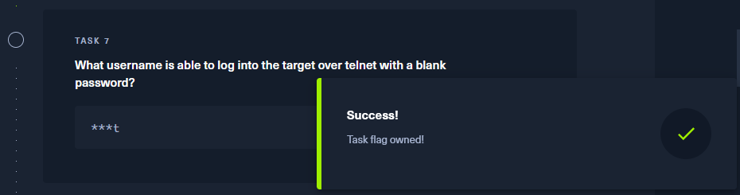
- root
For the last one, which requests the root flag, we have to connect to the target IP via telnet. Here telnet connection is enabled without any login authentication which is a vulnerability. That's why telnet is not recommended and SSH has replaced it. Here's how the connect is done vie telnet.
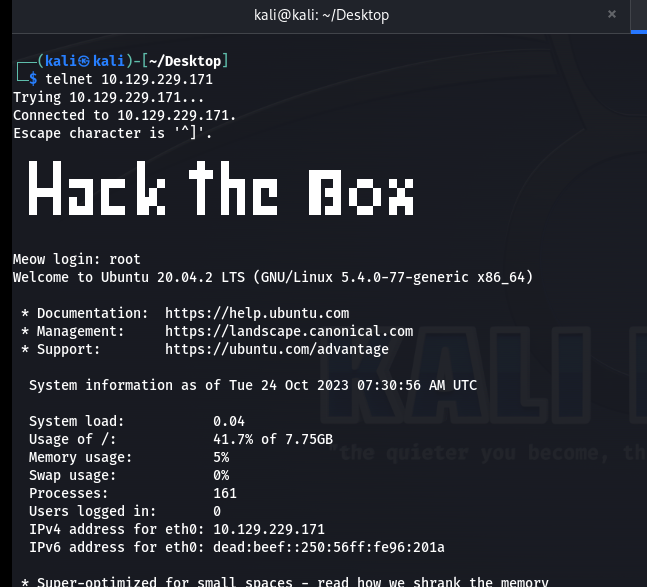
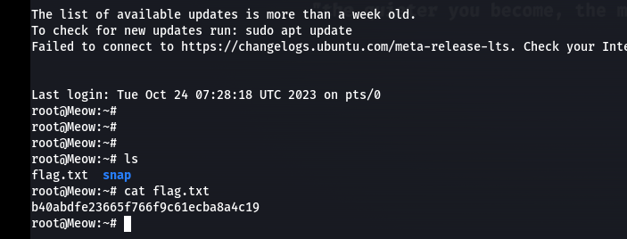
Once connected, we can remotely access the files of the target machine. Listing (ls) the contents revealed the 'flag.txt' file. Copy and paste the flag....and that concludes this task..!
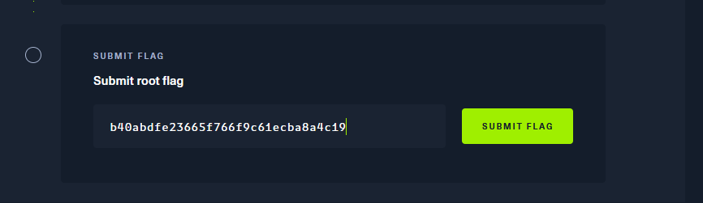
Stay tuned for more Hack the Box and other machines...!